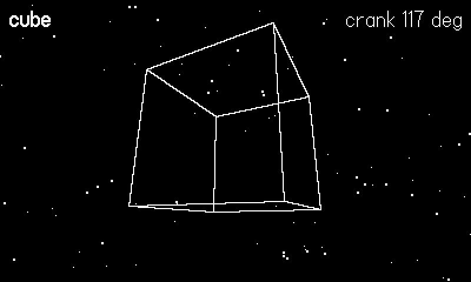
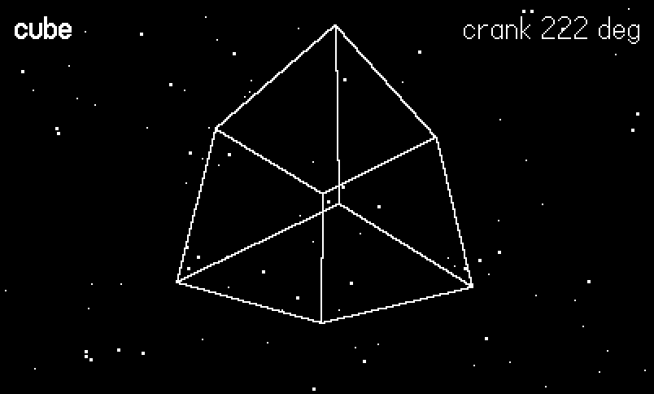
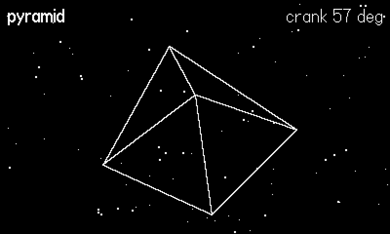
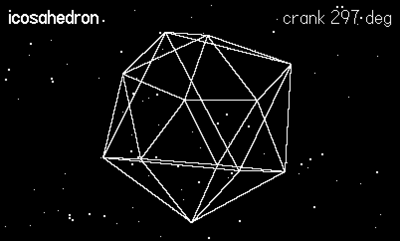

8 Vector Graphics and Faking 3D
A 1-bit screen is a terrible place for textured polygons and a wonderful place for lines. Hairline strokes on black are this hardware’s native glamour — they alias crisply, cost almost nothing, and carry an arcade-cabinet pedigree that 1-bit dither flatters instead of fighting. This chapter builds up the whole stack of line-based illusion: the SDK’s playdate.geometry toolkit, rotation matrices, perspective projection (one divide), wireframe models as vertex-and-edge lists, parallax starfields — and the judgment call about when any of this is worth doing.
The example, 08-wireframe, is the classic demo done properly: a cube, a square pyramid, and an icosahedron spinning over a three-layer starfield, with the crank as the rotation control — turn the crank, turn the solid, and the sky pans with you. The figure script cranks three degrees a frame, which is how the figures in this chapter caught the same cube at two different attitudes. Twelve of the case-study games — the entire Phosphor package — live on this stack, and their engine files (vec/mat.lua, vec/proj.lua, vec/shapes.lua) are quoted throughout.
8.1 playdate.geometry: the SDK’s vector toolkit
The SDK ships a full 2D geometry library under playdate.geometry: point.new(x, y), vector2D.new(dx, dy) (with vector2D.newPolar(len, angle), dot products via v:dotProduct, :magnitude, :normalized, :leftNormal…), lineSegment, rect, arc, polygon, and affineTransform.new() — a 2D matrix you build up with :rotate(deg), :scale(s), :translate(dx, dy) and apply with :transformPoint(p) (or its non-mutating sibling :transformedPoint). Objects support operators — a transform times a point works — and several drawing calls accept geometry objects directly (gfx.drawCircleAtPoint(p, r), gfx.fillPolygon(polygon)).
It is good code, and this chapter mostly doesn’t use it. Two reasons, both instructive. First, every point.new in a per frame loop allocates a table, and a wireframe scene transforms hundreds of vertices a frame — plain number pairs and flat arrays generate zero garbage (a theme the performance chapter returns to). Second, affineTransform is 2D-only; rotation in depth needs the 3×3 matrices we are about to write anyway. Reach for playdate.geometry when you hold a handful of long-lived shapes — collision polygons, level geometry, a lineSegment you intersect against — and stay with flat arrays when you transform in bulk.
8.2 Rotation is a matrix
To spin a 3D model you rotate its vertices. A rotation about one axis is high-school trig; the standard packaging is a 3×3 matrix, and the example stores one as a flat, row-major 9-element array — no classes, no allocation churn:
-- 3x3 rotation matrices as flat row-major 9-arrays.
Mat = {}
function Mat.rx(t)
local s, c = math.sin(t), math.cos(t)
return { 1, 0, 0, 0, c, -s, 0, s, c }
end
function Mat.ry(t)
local s, c = math.sin(t), math.cos(t)
return { c, 0, s, 0, 1, 0, -s, 0, c }
end
function Mat.mul(a, b)
local m = {}
for r = 0, 2 do
for c = 1, 3 do
m[r * 3 + c] = a[r * 3 + 1] * b[c]
+ a[r * 3 + 2] * b[c + 3]
+ a[r * 3 + 3] * b[c + 6]
end
end
return m
end
function Mat.apply(m, x, y, z)
return m[1] * x + m[2] * y + m[3] * z,
m[4] * x + m[5] * y + m[6] * z,
m[7] * x + m[8] * y + m[9] * z
endMat.rx(t) and Mat.ry(t) build single-axis rotations; Mat.mul(a, b) composes them (apply b, then a — order matters, as it always does with matrices); Mat.apply(m, x, y, z) transforms one vertex for the cost of nine multiplies. The example composes crank-yaw with a slow automatic pitch each frame:
local m = Mat.mul(Mat.rx(pitch), Mat.ry(yaw))This is the same design as Phosphor’s vec/mat.lua, which adds the one refinement a long-running game needs — matrices that are spun incrementally every frame accumulate floating point drift until the model shears, so it re-orthonormalizes, a trick it credits to Elite:
-- phosphor/vec/mat.lua:87
-- Re-orthonormalize to shed the rounding drift that accumulates
-- when a matrix is spun every frame (Elite's TIDY).
-- Gram-Schmidt anchored on column 3 (nose).
function Mat.tidy(m)Our example rebuilds its matrix from angles every frame instead — drift-free by construction, and the right call when your state is two angles. Keep a persistent orientation matrix only when objects tumble freely (a ship rolling about its own nose), and then tidy it now and again.
8.3 Perspective is a divide
All of 3D projection, in one sentence: things twice as far away look half as big. The code is barely longer:
-- Perspective projection: camera at the origin looking down +Z.
-- A point projects by dividing x and y by its depth.
Proj = {
cx = 200, cy = 120, -- screen center
focal = 210, -- ~60 degree FOV on a 400px screen
near = 0.5, -- nothing closer than this draws
}
function Proj.point(x, y, z)
if z < Proj.near then return nil end
local k = Proj.focal / z
return Proj.cx + x * k, Proj.cy - y * k
endDivide x and y by depth, scale by a focal length, offset to the screen center, flip y (screens grow downward, worlds grow upward). The focal length sets the field of view — 210 gives roughly 60° across a 400-pixel screen; bigger is a telephoto, smaller a fisheye. That is the entire mathematical content of “3D on the Playdate”. Everything else is bookkeeping.
The near guard matters more than it looks. As z approaches zero the divide blows up; at z ≤ 0 the point is behind you and the math cheerfully projects it anyway, mirrored, producing the classic inside-out flicker. The example refuses to project anything closer than near and drops edges with an unprojected endpoint — honest and crude. Phosphor’s first-person games cannot drop those edges (walls legitimately pass the camera), so vec/proj.lua clips each line to the near plane by interpolation instead — this is the projection core the whole package rides on:
-- phosphor/vec/proj.lua:46
-- draw a world-space line with near-plane clipping
function Proj.line(x1, y1, z1, x2, y2, z2)
local ax, ay, az = toCam(x1, y1, z1)
local bx, by, bz = toCam(x2, y2, z2)
local n = Proj.near
if az < n and bz < n then return end
if az < n then
local t = (n - az) / (bz - az)
ax, ay, az = ax + (bx - ax) * t, ay + (by - ay) * t, n
elseif bz < n then
local t = (n - bz) / (az - bz)
bx, by, bz = bx + (ax - bx) * t, by + (ay - by) * t, n
end
local ka, kb = Proj.focal / az, Proj.focal / bz
gfx.drawLine(Proj.cx + ax * ka, Proj.cy - ay * ka,
Proj.cx + bx * kb, Proj.cy - by * kb)
end8.4 A model is vertices plus edges
A wireframe model needs no meshes, no normals, no UVs: a flat array of vertex coordinates and a flat array of index pairs saying which vertices to connect:
-- A model is a flat vertex array {x,y,z, x,y,z, ...} plus a flat
-- edge array of 1-based vertex index pairs {a,b, a,b, ...}.
Models = {}
Models.cube = {
name = "cube",
verts = {
-1, -1, -1, 1, -1, -1, 1, 1, -1, -1, 1, -1,
-1, -1, 1, 1, -1, 1, 1, 1, 1, -1, 1, 1,
},
edges = {
1, 2, 2, 3, 3, 4, 4, 1, -- back face
5, 6, 6, 7, 7, 8, 8, 5, -- front face
1, 5, 2, 6, 3, 7, 4, 8, -- the connecting struts
},
}
Models.pyramid = {
name = "pyramid",
verts = {
-1, -1, -1, 1, -1, -1, 1, -1, 1, -1, -1, 1,
0, 1.2, 0,
},
edges = { 1, 2, 2, 3, 3, 4, 4, 1, 1, 5, 2, 5, 3, 5, 4, 5 },
}
-- Icosahedron: three golden-ratio rectangles; the 30 edges are
-- found by distance (every edge has squared length 4).
local function icosahedron()
local p = (1 + math.sqrt(5)) / 2
local v = {
-1, p, 0, 1, p, 0, -1, -p, 0, 1, -p, 0,
0, -1, p, 0, 1, p, 0, -1, -p, 0, 1, -p,
p, 0, -1, p, 0, 1, -p, 0, -1, -p, 0, 1,
}
local e = {}
for i = 1, 12 do
for j = i + 1, 12 do
local ax, ay, az = v[i*3-2], v[i*3-1], v[i*3]
local bx, by, bz = v[j*3-2], v[j*3-1], v[j*3]
local d = (ax-bx)^2 + (ay-by)^2 + (az-bz)^2
if math.abs(d - 4) < 0.001 then
e[#e + 1] = i
e[#e + 1] = j
end
end
end
-- normalize the radius to match the cube's (sqrt 3)
local s = math.sqrt(3) / math.sqrt(1 + p * p)
for i = 1, #v do v[i] = v[i] * s end
return { name = "icosahedron", verts = v, edges = e }
end
Models.icosa = icosahedron()The cube is typed by hand; the icosahedron is derived — its twelve vertices are three golden-ratio rectangles, and rather than hand-enter thirty edges, the code finds every vertex pair at the known edge length. Deriving beats transcribing whenever a shape has structure: it cannot contain a typo’d index, and it documents the geometry. (For 2D outlines the same philosophy appears in Phosphor’s vec/shapes.lua, where asteroids are Shapes.blob — polylines with randomly jittered radii — and every ship is a list of hand-typed polylines.)
Drawing is: rotate every vertex, push it out to viewing depth, project it, then connect the dots:
-- Rotate every vertex by m, push the model out to depth z, then
-- draw each edge -- skipping any edge that crosses the near
-- plane (phosphor's Proj.line clips these by interpolation).
local sx, sy = {}, {} -- projected-vertex scratch, reused
function Models.draw(model, m, z, scale)
local v = model.verts
local n = 0
for i = 1, #v - 2, 3 do
local x, y, d = Mat.apply(m,
v[i] * scale, v[i + 1] * scale, v[i + 2] * scale)
n = n + 1
sx[n], sy[n] = Proj.point(x, y, d + z)
end
local e = model.edges
for i = 1, #e - 1, 2 do
local a, b = e[i], e[i + 1]
if sx[a] and sx[b] then
gfx.drawLine(sx[a], sy[a], sx[b], sy[b])
end
end
endNote the scratch arrays sx, sy reused across calls — with 12 vertices nobody cares, but the habit (project each vertex once, allocate nothing per frame) is what lets Phosphor’s Proj.mesh — the same function shape — draw fleets of ships at 30 fps.


Culling, briefly. This example draws every edge, spin regardless — for a single convex solid, the “wrong” edges read as the object’s far side and the effect is the point. Solid-looking 3D adds backface culling: give the model faces (vertex triples), compute each face’s winding after projection (the 2D cross product of two edges), and skip faces — or edges belonging only to faces — that wind clockwise. Near-plane culling you have already met; it is the near guard, upgraded to clipping when things may pass the camera. That, plus painter’s-sorting objects by depth, is as far as wireframe 3D ever needs to go.
8.5 The starfield: depth for three multiplies
Nothing sells rotation like a background that answers it. The example’s sky is ninety stars in three parallax layers; when the crank turns the view, each layer pans at its own rate — near stars (drawn heavier) sweep fastest, far ones barely creep:
-- Three parallax layers. Each star is {x, y, layer}; the crank
-- angle pans the sky, near layers moving more than far ones.
Stars = { list = {}, SPEED = { 0.4, 0.9, 1.8 } }
function Stars.init(n)
for i = 1, n do
Stars.list[i] = {
math.random(0, 399), math.random(0, 239),
math.random(1, 3),
}
end
end
function Stars.draw(yawDeg)
gfx.setColor(gfx.kColorWhite)
for _, s in ipairs(Stars.list) do
local x = (s[1] - yawDeg * Stars.SPEED[s[3]]) % 400
if s[3] == 3 then
gfx.fillCircleAtPoint(x, s[2], 1)
else
gfx.drawPixel(x, s[2])
end
end
endNo projection at all — just x = (x0 - yaw * speed) % 400 — yet the eye reads layered depth immediately. This is the cheapest 3D effect in the book and the first one to reach for: the Phosphor space games run the same trick with drift instead of crank.
The update that ties crank to matrix to model to sky, through the same bot-first input seam as every example (the script supplies crank; on hardware it is playdate.getCrankPosition(), absolute degrees, 0 = crank up):
function playdate.update()
local bot = Harness.input(frame)
local crank
if bot then
crank = bot.crank
pick = math.min(3, math.ceil(frame / 80))
else
crank = playdate.getCrankPosition()
if playdate.buttonJustPressed(playdate.kButtonA) then
pick = pick % 3 + 1
end
end
local yaw = math.rad(crank)
local pitch = frame * 0.008
local m = Mat.mul(Mat.rx(pitch), Mat.ry(yaw))
gfx.clear(gfx.kColorBlack)
Stars.draw(crank)
gfx.setColor(gfx.kColorWhite)
gfx.setLineWidth(1)
local model = Models[ORDER[pick]]
Models.draw(model, m, 4.2, 1.1)
gfx.setImageDrawMode(gfx.kDrawModeFillWhite)
gfx.drawText("*" .. model.name .. "*", 8, 8)
gfx.drawTextAligned(
string.format("crank %d deg", crank % 360),
392, 8, kTextAlignment.right)
gfx.setImageDrawMode(gfx.kDrawModeCopy)
end

8.6 The voxel 3/4 projection, and earning your engine
Perspective is not the only projection worth faking. The Voxel package renders Voxatron-style rooms with a fixed 3/4 view — a projection with no divide at all:
-- voxel/core/vox.lua:1
-- Voxel core: the room engine. A Voxatron-style fixed room -- a
-- W x D x H grid of shaded voxels in a 3/4 projection on the
-- 1-bit screen.
--
-- world x -> screen x (S px per voxel)
-- world y (depth, 0 = back) -> screen y down (TY px per step)
-- world z (height, 0 = floor) -> screen y up (TZ px per step)Depth steps the pixel down, height steps it up, done. Each voxel is a dither-shaded top face and front face; static terrain pre-renders to a background image exactly as in Chapter 7. The lesson is that “3D” is a menu, not a destination: perspective wireframe, 3/4 voxel, flat parallax — each buys a different illusion at a different price.
The voxel package came with a design rule, learned by shipping the counterexamples: a voxel game must use height and volume — dig, lob, climb, flood, fall — to earn the engine. Bomberman and a flat tower defense were built in voxel paint, judged unreadable and pointless, and cut. The rule generalizes to every projection in this chapter. If your gameplay is 2D, a 3D projection adds cost (every vertex, every frame), subtracts clarity (1-bit pixels are scarce; spend them on information), and adds nothing the design uses. Spin the icosahedron because rotation is the mechanic — the crank made it one — not because it demos well. Before adopting any projection, name the mechanic that needs it. No mechanic, no engine.
8.7 What you know now
playdate.geometrycovers 2D points, vectors, transforms, and shapes — use it for long-lived geometry, but transform bulk vertices with flat arrays and plain numbers to avoid per-frame allocation.- Rotation is a 3×3 matrix: build per-axis with sin/cos, compose with multiplication (order matters), rebuild from angles when you can, re-orthonormalize (
Mat.tidy) when you must accumulate. - Perspective projection is
screen = center + focal * xy / z, a y-flip, and a near-plane guard — upgraded to interpolated clipping when geometry passes the camera. - A wireframe model is a flat vertex array plus edge index pairs; derive structured shapes (the icosahedron) instead of transcribing them; project each vertex once into reused scratch arrays.
- Parallax starfields fake depth with one multiply per layer; the voxel 3/4 view fakes it with two adds; both are legitimate projections on the same menu as perspective.
- And the rule that governs the whole chapter: a projection must earn its engine — no mechanic, no engine.
- Both of this chapter’s borrowed engines get read in full later on: Chapter 21 walks
vec/and its sixteen vector games, Chapter 23 the 3/4 view and its ten.
That closes the graphics part of the book. Next, Part III turns to input, starting with the button layer — edges versus levels, input snapshots, and the seam that let every figure in these five chapters script itself.